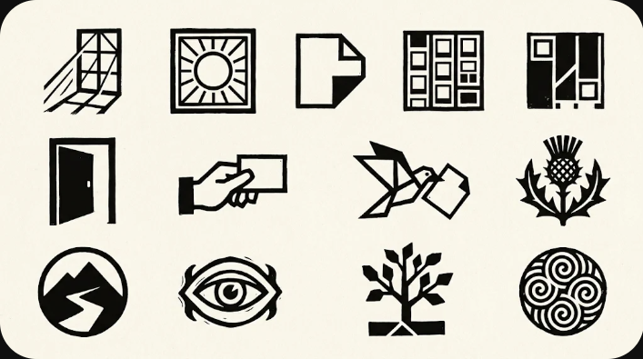

These are directions, not logos. React to the feeling and ignore the finish. Which ones are closer to you, and which are definitely not? Half a yes is useful.
Your name does the work
Nixon
1. Editorial italic. A magazine masthead. Calm and grown up.
Nixon
2. Soft and odd. A serif with some wobble and character.
NixonCreative Studio
3. Heavy poster serif. Old-school print with real presence.
Nixon
4. Stretched wide. The loudest modern option.
nixon
5. Light and round. Lowercase and airy. The most modern-tech of the group.
Nixon Creative Studio
6. Two voices. Italic serif for you, plain sans for the work.
Made by a person
Nathan Nixon
7. Signature. Photographers sign prints. It would be your real handwriting; this font only stands in for it.
Nixon
8. Pen note. Looser and warmer, like a margin note.
N. Nixon
9. Formal script. An old-fashioned flourish, set against a modern site.
Ideas from your own trades
nixon creative studio
10. The address bar. Your logo is a browser's URL pill, the same one on every window on your site.
NIXON CREATIVE 40012A
11. Film edge. The markings printed along a strip of film, set as a line of type.
Nixon
12. Crop marks. The name, framed the way a photo is marked up for print.
(Nixon)
13. Held in brackets. A small typographic habit you could repeat across the site.
Nixon
14. Every client's letter. Each letter from a different typeface: one person, many voices. Could change often.15. Print stamp. The studio stamp on the back of a photo. Could sit in a corner of the site.
A symbol instead of a letter

Gemini sketches, for ideas only. Whichever you like would be redrawn from scratch. Top row, left to right: window, sun, folded page, contact sheet, grid. Middle: door, hand, bird, thistle. Bottom: mountain path, eye, tree, spiral.